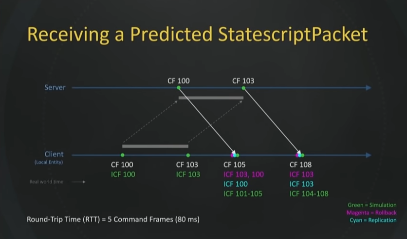
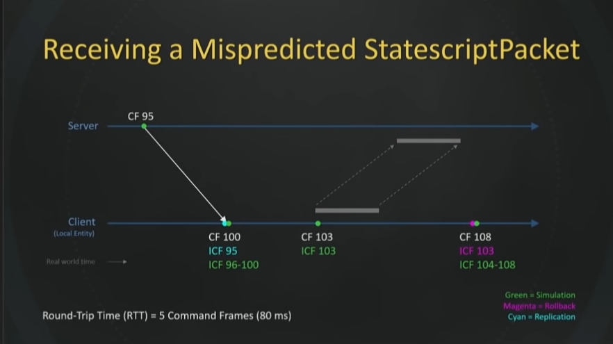

While researching for the previous blog post, I stumbled upon another J. B. Rainsberger talk on how accidental complications sabotage estimations, which is also excellent on a meta level since he hits his talk duration estimate on the second!
From there on the YouTube algorithm dragged me further into the maze...
How Overwatch implemented Entity Component System (ECS) as an architecture:
- Components have no functions
- Systems have no state
- Systems cannot call other systems
Some more:
- Game runs at fixed frame rate, sends a sliding window (ring buffer) of input to mitigate UDP packet loss
- The input buffer size is dynamic: the higher the latency, the bigger the buffer
- Entire simulation is deterministic, can be interpolated and re-winded
If you take away one lesson from this talk let it be this: behaviors are much less complex if they are expressed in a single callsite, in which all major behavioral sideeffects are localized to that callsite.
- "Statescript", custom scripting language for gameplay
- Key game design insight: "awesome moves" (specials) block re-winding, so significant player abilities/cooldowns are not rolled back
- Overall not as interesting as the first talk, but has some nice diagrams for the netcode and prediction:


(screenshots from the talk linked above)
(from the Cogmind developer)
- Develop the critical path first, focus on the core mechanic, release early and often, blog
- Recommends to practice making smaller roguelikes first, e.g. 7-day roguelikes (7DRL)
- roguelike development reddit for plenty of resources, discussion and help
- Mind accessibility, e.g. Cogmind players prefer tileset graphics and mouse controls
- All in all, nice overview of plenty of roguelike themes, mechanics and layouts
Here the binge ended, but more happened since the last blog post:
Lean Coffee on remote work mostly due to Corona. When talking about "overcommunicating", we recalled documentation essentials:
- URL
- Author
- Timestamp, versioning
- Searchable
A nice video on the attention economy, social media selling attention of their users.
[...] a wealth of information creates a poverty of attention [...]
-- Herbert A. Simon, 1971
Further Links